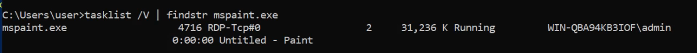

Insecure GUI Apps
Insecure GUI Apps
Start an RDP session as the "user" account:
rdesktop -u user -p password321 10.10.83.22
Double-click the "AdminPaint" shortcut on your Desktop. Once it is running, open a command prompt and note that Paint is running with admin privileges:
tasklist /V | findstr mspaint.exe

In Paint, click "File" and then "Open". In the open file dialog box, click in the navigation input and paste: file://c:/windows/system32/cmd.exe
Press Enter to spawn a command prompt running with admin privileges.
END